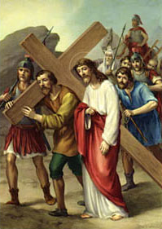

V. állomás: Cirenei Simon viszi Jézus keresztjét

Kényszerítették Simont (vö. Mk 15,21). Így tettek a római katonák, félve attól, hogy a kimerült elítélt nem ér fel keresztjével a Golgotára. Különben nem tudták volna végrehajtani a megfeszítés büntetését. Kerestek valakit, aki segített vinni a keresztet. Simonon állapodott meg a tekintetük. Arra kényszerítették, hogy vegye magára a súlyt. Elképzelhető, hogy nem értett ezzel egyet, sőt tiltakozott. Egy elítélttel együtt hordozni a keresztet, bántó kihívás volt a szabad emberi méltóság ellen. Szándéka ellenére Simon felvette a keresztet, hogy segítsen Jézusnak. Egy nagyböjti énekben visszhangoznak e szavak: "A kereszt terhe alatt Jézus elfogadja a Cireneit". E szavak megsejtetik ezt a teljes látásmód-cserét: az isteni elítélt olyannak mutatkozik, mint aki bizonyos értelemben "a kereszt ajándékát" adja. Nem ő volt, aki azt állította: "Aki nem veszi fel a keresztjét és nem követ engem, nem méltó hozzám" (Mt 10,38)? Simon ajándékot kap. Ezáltal méltóvá lett. Ami a népség szemében méltósága megalázásának minősülhetett, az a megváltás perspektívájában új méltóságnak számít. Isten Fia egyedi módon tette őt üdvözítő művének részesévé. Vajon Simon tudta ezt? Márk evangélista Cirenei Simont "Sándor és Rúfusz atyjával" azonosítja (15,21). Ha Cirenei Simon fiai ismertek voltak az őskeresztény közösségben, akkor valószínűsíthető, hogy ő maga is hitt Krisztusban, akinek a keresztjét hordozta. A kényszerűségből szabadon a készségre jutott, az "Aki nem veszi fel keresztjét, nem méltó hozzám" szavak belső megértésére. A keresztet hordozva bevezetést nyert a kereszt evangéliumának ismeretébe. Attól kezdve ez az evangélium sokaknak szól, számtalan cireneinek, a történelem során arra hívva őket, hogy Jézussal együtt vigyék keresztjüket.
Krisztusunk, aki megadtad a kereszt hordozásának méltóságát Cirenei Simonnak, e teher alatt kérünk, fogadj el minket is, fogadj el minden embert, és add meg mindannyiunknak a készség kegyelmét. Add, hogy meg ne vonjuk tekintetünket azoktól, akik a betegség, a magány, az éhség, az igazságtalanság keresztjére lettek kárhoztatva. Add, hogy egymás terhét hordozva váljunk kereszted evangéliumának tanúivá, általad, aki élsz és uralkodol mindörökkön örökké. Amen.